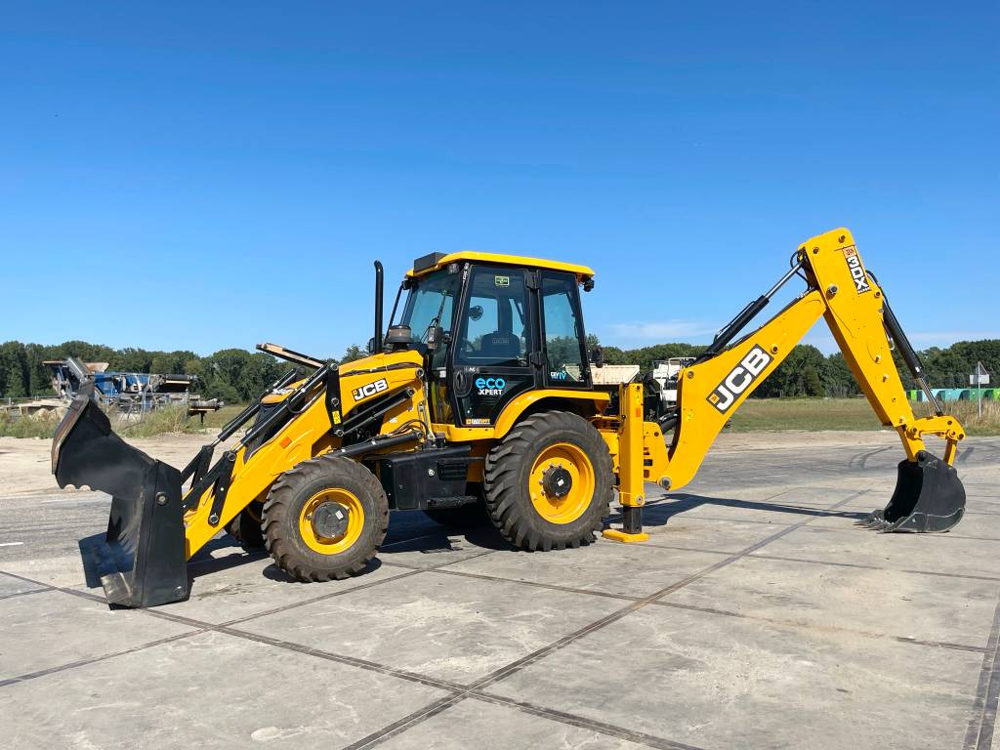
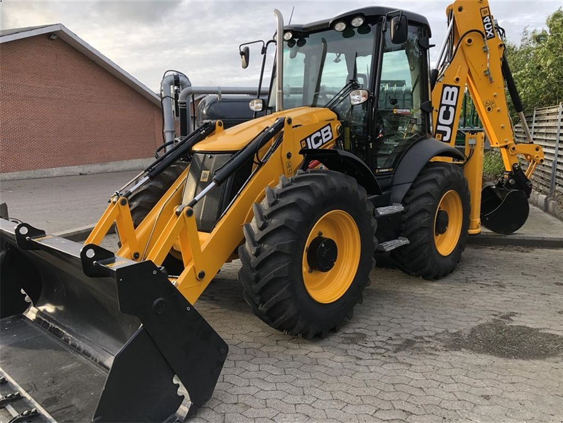
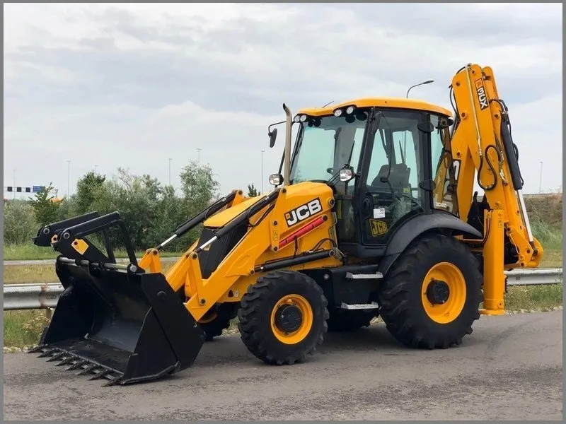

Gul Graver er en pålidelig og stærk gravemaskine, der kan tackle selv de mest udfordrende opgaver på byggepladsen. Med avanceret teknologi og en robust konstruktion er Gul Graver bygget til at holde i lang tid og klare en række forskellige arbejdsopgaver. Den er alsidig og kan bruges til alt fra udgravning af byggegruber til landskabspleje og vejbyggeri. Med en Gul Graver på din byggeplads kan du være sikker på at få arbejdet gjort effektivt og pålideligt.


